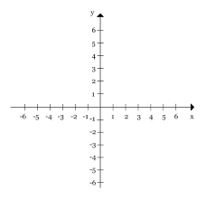

É importante observar os numeros dessas retas, por exemplo: no eixo X os numeros positivos sempre estarao a direita, ja os negavitos estaraoa esquerda da origem. Já no eixo Y, acima da origem estarão os numeros negativos e abixo da origem estarão os numeros positivos.

Toda vez que um par ordenado estiver com o numero 0 em um dos eixos significa que o ponto está em cima do outro numero do par ordenado.
Plano cartesiano sempre é desenhado por duas retas que, ao se encontrarem, formam quatro regiões conhecidas como quadrantes. Esses quadrantes são numerados em sentido anti-horário, começando pela região que compartilha valores positivos tanto para coordenadas x quanto para coordenadas y.
Em geometria, quadrante é qualquer das quatro partes iguais em que se pode dividir uma circunferência. Pode ainda corresponder a quarta parte de um circulo e equivalente a 90 graus